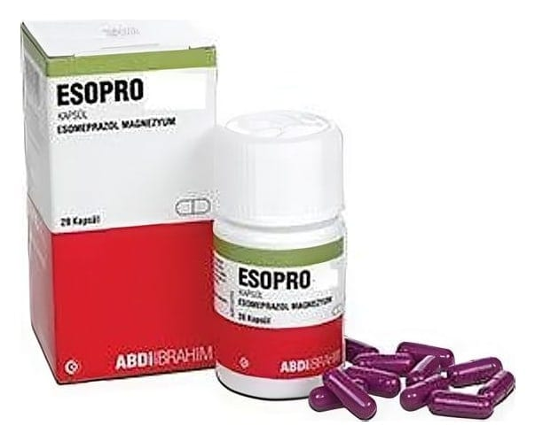

Esopro 20 mg Kapsül, 28 Adet

Ne için kullanılır
KT · Bölüm 1ESOPRO®, esomeprazol etkin maddesini içerir ve “proton pompası inhibitörü” (PPI) olarak bilinen ilaçlardan biridir. Bu ilaçlar etkilerini midenizdeki asit oluşumunu azaltarak gösterir.
ESOPRO®, 20 mg esomeprazol magnezyuma eşdeğer 21.753 mg esomeprazol magnezyum dihidrat içeren, beyazımsı açık sarı pelletler içeren mor renkli, ‘3’ numara sert jelatin kapsüldür.
ESOPRO®, 14 ve 28 kapsüllük PP kapaklı HDPE şişede piyasaya sunulmaktadır.
ESOPRO®aşağıdaki durumların tedavisinde kullanılır: • Gastro-özofajial reflü hastalığında (GÖRH) - Mide suyunun yemek borusuna (boğazınızı midenize bağlayan tüp) kaçışına bağlı yemek borusunda ağrı, iltihaplanma ve mide yanmasıdır (Erozif reflü özofajitin tedavisinde) - Mide suyunun yemek borusuna kaçışına bağlı mide yanması ve kusma gibi hastalık
belirtilerinde (Gastro-özofajial reflü hastalığının semptomatik tedavisinde)
• Sürekli NSAİİ (non-steroidal anti-inflamatuvar ilaç) tedavisi gerektiren hastalarda
- Ağrı veya iltihaplanma için kullanılan bir ilacın neden olduğu, mide veya karın boşluğunun üst kısmında ağrı veya rahatsızlık gibi belirtiler (NSAİİ kullanımı ile ilişkili üst gastrointestinal belirtilerin tedavisinde) - Ülserler: Ağrı ve iltihaplanma için kullanılan ilaçların neden olduğu ülserlerin iyileştirilmesi ve önlenmesinde (Gastrik ülserlerin iyileştirilmesi ile NSAİİ tedavisine bağlı gastrik ve duodenal ülserlerin önlenmesi)
• Ülserlere neden olan Helicobacter pylori isimli bir bakteri enfeksiyonunda
• İnfüzyonluk çözelti ile tedavi sonrasında kanamayı durdurmayı sağlayan mekanizmaların (=hemostaz) sürdürülmesi ve mide veya duodenum (on iki parmak bağırsağı) ülserlerinde tekrar kanamanın önlenmesinde
• Midede aşırı asit oluşmasına neden olan hormon üreten tümörler (Zollinger-Ellison sendromu) dahil, midede aşırı asit salgısı durumlarında
Doktorunuzun tavsiyelerine uyunuz ve daha fazla bilgiye ihtiyaç duyarsanız doktor veya eczacınıza danışınız.